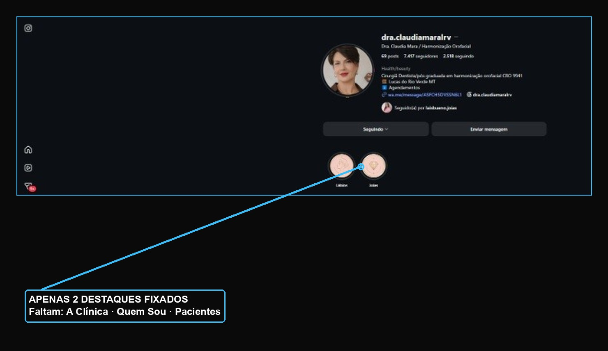
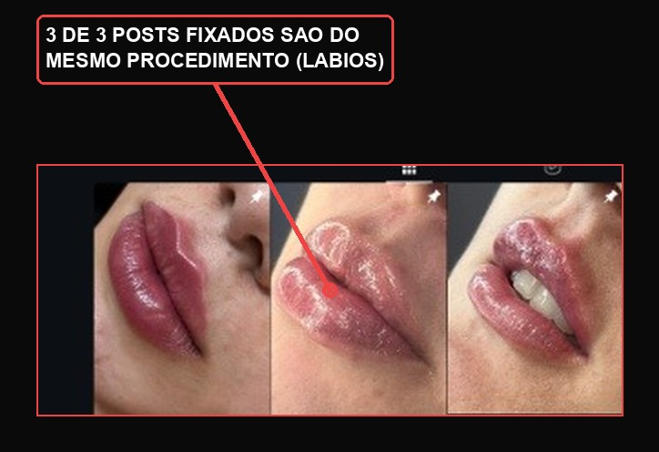
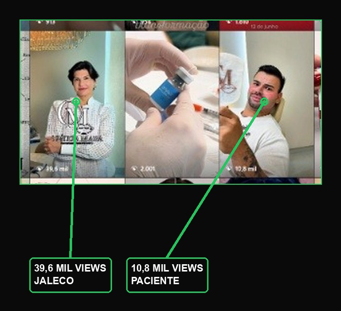

Um raio-x visual do @dra.claudiamaralrv, com ajustes para o perfil converter ainda mais o tráfego que os anúncios já estão trazendo.
Por que otimizar o perfil com a campanha já rodando?
Os anúncios já estão trazendo visitantes novos até o perfil todos os dias. Mas quem transforma esse visitante em paciente agendado não é o anúncio — é o que a pessoa encontra quando chega até você. Este guia organiza o perfil em três pilares que aumentam a conversão de quem já está chegando: autoridade (quem é a Dra. Claudia), segurança (o espaço, os cuidados, a experiência) e clareza (o que oferece e como agendar). Com a vitrine mais forte, o mesmo investimento em anúncio rende mais.

Hoje existem apenas 2 destaques fixados (Lábios e Joias). Para quem chega pelo anúncio sem nunca ter ouvido falar da clínica, faltam os destaques que constroem confiança antes da primeira mensagem.
Um visitante vindo do anúncio (lead frio) não agenda no primeiro contato — ele investiga o perfil primeiro. Sem destaques de autoridade e prova social, ele sai sem se aquecer, e o investimento em tráfego perde força.

Fixar 3 fotos do mesmo procedimento comunica um único assunto: preenchimento labial. Isso atrai um público que compara preço de boca a boca, e deixa de fora o público de 35 a 55+ anos com maior poder aquisitivo, que busca rejuvenescimento facial completo — e decide muito mais por confiança e autoridade do que por valor do procedimento.

Esses dois vídeos já foram validados pelo próprio público — o alcance orgânico deles mostra que retêm atenção e transmitem postura profissional. Não são só o conteúdo com mais views: são a prova de que esse formato funciona com essa audiência específica de Lucas do Rio Verde.
Eles serão os principais "soldados" da campanha de Engajamento para o WhatsApp — usados como estão, sem precisar de produção nova para começar a rodar.
Gravar vídeos novos replicando exatamente a energia e o formato do vídeo de 39,6 mil views (jaleco, ambiente da clínica, tom direto), sempre encerrando com uma chamada para ação clara:
"Agende sua avaliação no Jd. Amazonas."
Com a bio, os destaques e os posts fixados ajustados como orientado aqui, os anúncios que já estão no ar passam a converter mais — os mesmos visitantes chegam a um perfil que já constrói confiança sozinho, antes mesmo da primeira mensagem no WhatsApp.